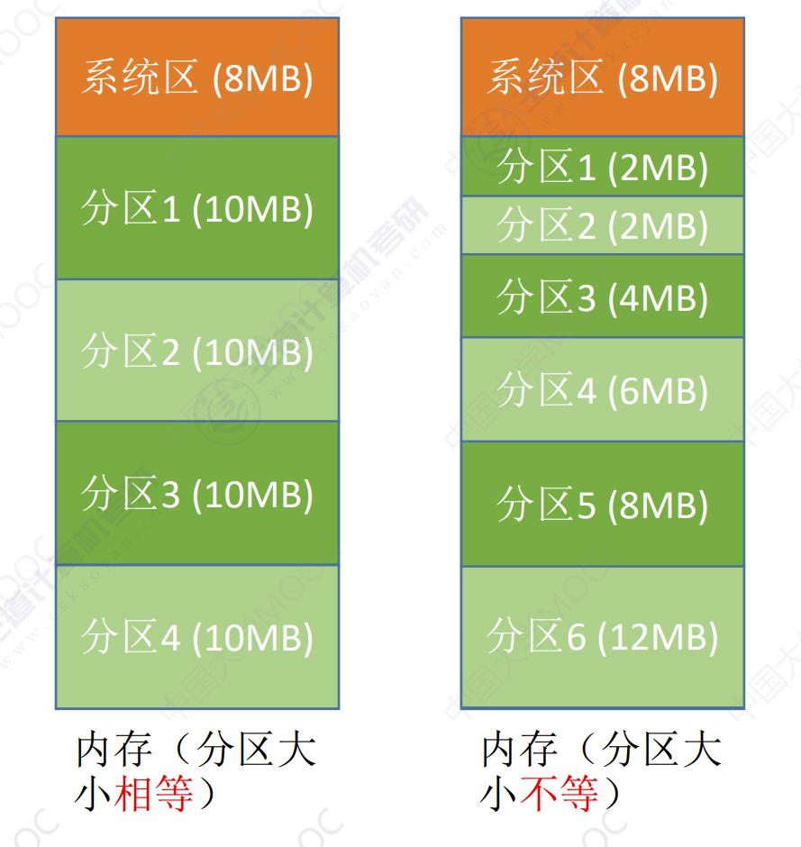

内存空间的分配和回收
内存空间的分配和回收
连续分配管理方式
- 连续分配：为用户进程分配的必须是一个连续的内存空间。
- 非连续分配：为用户进程分配的可以是一些分散的内存空间。
单一连续分配
在单一连续分配方式中，内存被分为系统区和用户区。系统区通常位于内存的低地址部分，用于存放操作系统相关数据。内存中只能有一道用户程序。用户程序独占整个用户空间。
- 优点：实现简单，无需外部碎片。可以用覆盖技术扩充内存，不一定需要采取内存保护。
- 缺点：只能用于单用户，单任务的操作系统中；有内部碎片（分配给某进程的内存区域中，如果是有些部分没有用上，就是内部碎片）；存储器利用率低。
固定分区分配
为了能在内存中装入多道程序，且这些程序之间又不会相互干扰，于是将整个用户空间划分为若干个固定大小分区，在每个分区中只装入一道作业。
固定分区分配分为：分区大小相等，分区大小不等两种情况。
- 分区大小相等：缺乏灵活性，但是很适合于用一台计算机控制多个相同对象的场合。
- 分区大小不等：增加了灵活性，可以满足不同大小的进程要求。根据常在系统中运行的作业大小情况进行划分。
操作系统需要建立一个数据结构——分区说明表，来实现各个分区的分配与回收。每个表项对应一个分区，通常按分区大小排列。每个表项包括对应分区的大小、起始地址、状态（是否已分配）。

某个用户要装入内存时，由操作系统内核程序根据用户程序大小检索该表，从中扎到一个能满足大小的，未分配的分区，将之分配给该程序，然后修改状态为已分配。
- 优点：实现简单，无外部碎片
- 缺点：
- 当用户程序太大时，可能所有分配都不能满足要求，此时不得不采用覆盖技术来解决，但又会降低性能。
- 会产生内部碎片，内存利用率降低。
动态分区分配
动态分区分配又称为可变分区分配。这种分配方式不会预先划分内存分区，而是在进程装入内存时，根据进程的大小动态地建立分区，并使分区的大小正好适合进程的需要。因此系统分区的大小和数目是可变的。
动态分区分配没有内部碎片，但是有外部碎片。
- 内部碎片，分配给某进程的内存区域中，如果有些部分没有用上。
- 外部碎片，是指内存中的某些空闲分区由于太小而难以利用。
如果内存中空闲空间的总和本来可以满足某进程的要求，但由于进程需要的是一整块连续的内存空间，因此这些碎片不能满足进程的需求。可以通过紧凑（拼凑，Compaction）技术来解决外部碎片
系统要用什么样的数据结构来记录内存使用情况

当很多个空闲分区都能满足需求时，应该选择哪个分区进行分配？
把一个新作业装入内存时，须按照一定的动态分区分配算法，从空闲分区表（或空闲分区链）中选出一个分区分配给该作业。由于分配算法算法对系统性能有很大的影响，因此人们对它进行了广泛的研究。
如何进行分区的分配与回收操作？假设系统采用的数据结构是空闲分区表如何分配和回收？


动态分区分配算法
首次适应算法
算法思想：每次都从低地址开始查找，找到一个能满足大小的空闲分区。
如何实现：空闲分区以地址递增的次序排列。每次分配内存是顺序查找空闲分配链（或空闲分区表），找到大小能满足的第一个空闲分区。

举例：进程5和进程6需要调入内存。
- 进程5顺序查找空闲分配表或空闲分区链。发现第一个合适大小的分区是表的第一个分区。
- 进程5被分配到起始地址为8，大小为20MB的空闲内存块中。同时将内存分区表/分区链的对应项删掉。
- 进程6顺序查找空闲分配表或空闲分区链。发现第一个合适大小的分区是表的第三个分区。
- 进程6被分配到起始地址为60，大小为10MB的空闲内存块中。同时将内存分区表/分区链的对应项删掉。
最佳适应算法
算法思想：由于动态分区分配时一种连续的分配方式，为各进程分配的空间必须是连续的一整片区域。因此为了保证当大进程到来时能有连续的大片空间，可以尽可能多的的留下大片空闲区，即优先使用更小的空闲区。
如何实现：空闲分区按容量递增的次序链接。每次分配内存是顺序查找空闲分区链（或空闲分区表），找到大小能满足要求的第一个空闲分区。

举例：进程5和进程6需要调入内存。
- 进程5顺序查找空闲分配表或空闲分区链。发现第一个合适大小的分区是表的第一个分区。
- 进程5被分配到起始地址为60，大小为4MB的空闲内存块中。同时将内存分区表/分区链的对应项删掉。
- 进程6顺序查找空闲分配表或空闲分区链。发现第一个合适大小的分区是表的第二个分区。
- 进程6被分配到起始地址为32，大小为10MB的空闲内存块中。同时将内存分区表/分区链的对应项删掉。
最坏适应算法
算法思想：为了解决最佳适应算法的问题——即留下太多的难以利用的小碎片，可以在每次分配时优先使用最大的连续空闲区，这样分配后剩余的空闲区就不会太小，更方便使用。
如何实现：空闲分区按容量递减次序链接。每次分配内存是顺序查找空闲分区链（或空闲分区表），找到大小能满足要求的第一个空闲分区。

临近适应算法
算法思想：首次适应算法每次都从链头开始查找的。这就可能会导致低地址部分出现很多小的空闲分区，而每次分配查找时，都要经过这些分区，因此也增加查找的开销。如果每次从上次查找结束的位置开始检索，就能解决上述问题。
如何实现：空闲分区以地址递增顺序排列（可组成一个循环链表）每次分配内存是从上次查找结束的位置开始查找空闲分区链（或空闲分区表），找到一个大小满足要求的第一个空闲分区。

总结

非连续分配管理方式
基本分页存储管理
分页存储
- 将内存空间划分为一个一个相等大小的分区（比如：每个分区4KB），每个分区都是一个页框（页框=页帧=内存块=物理块=物理页面）。每个页框也都有编号，即页框号（页框号=页帧号=内存块号=物理块号=物理页面号），页框号从0开始。
- 将进程的逻辑地址空间也分为与页框大小相等的一个个部分，每个部分称为一个页或页面。每个页面也有一个编号，即页号，页号从0开始。
操作系统以页框为单位为各个进程分配内存空间。进程为每个页面分别放入一个页框中。进程的页面与内存的页框有一一对应关系。每个页面不必连续存放，可以放到不相邻的各个页框中。
重要的数据结构——页表
为了知道进程的每个页面在内存中存放的位置，操作系统需要为每个进程建立一个页表。页表通常位于进程PCB中。

假设某系统的物理内存大小为4GB，页面大小为4KB，则每个页表项至少应该为多少字节。
$内存块大小（物理内存）=页面大小（逻辑内存）=4KB=2^{12}B$
- 4GB内存总共会被分为$\frac{2^{32}}{2^{12}} = 2^{20}$个内存块。
- 内存块号范围是$0 - 2^{20}$。
- 内存块号需要用20bit表示。
- 至少用3B表示内存块号。（页表记录的只是内存块号，不是内存块的的起始地址！J号内存块的起始地址 = J * 内存块大小）
- 页号是隐含的，因此每个页表项占3B，存储整个页空间至少需要$3×(n + 1)B$
- 页号是隐含的不占内存空间，因为每个页表项大小相同，通过内存偏移即可找到下一个页表项的起始地址。
理论上，页表长度为3B即可表示内存号的范围，但是为了方便页表的查询，常常会让一个页表项占更多的字节，使得每个页面恰好可以装下整数个页表项。
页表的地址转换
要访问一个逻辑地址A，则：
- 确定逻辑地址A对应的页号P
- 找到P号页面在内存中的起始地址（需要查页表）
- 确定逻辑地址A的页内偏移量。
$$ 逻辑地址A对应的物理地址 = P号页面在内存中的起始地址 + 页内偏移量W \ 页号 = 逻辑地址 / 页面长度（取除法的整数部分） \ 页内偏移量 = 逻辑地址 % 页面长度（取除法的余数部分） $$
举例：假设某个计算机用32个二进制位表示逻辑地址，页面大小为4KB = 4096B
0号页的逻辑地址范围应该是0~4095，用二进制表示为：
00000000000000000000000000000000~00000000000000000000111111111111
1号页的逻辑地址范围应该是4096~8191，用二进制表示为：
00000000000000000000000000000000~00000000000000000001111111111111
2号页的逻辑地址范围应该是8192~12287，用二进制表示为：
00000000000000000010000000000000~00000000000000000010111111111111
对应逻辑地址2，用二进制表示为00000000000000000000000000000010。
- 页号：2/4096 = 000000000000000000000000
- 页内偏移量：2%4096 = 000000000010
对应逻辑地址4097，用二进制表示为00000000000000000001000000000001。
- 页号：4097/4096 = 000000000000000000000001
- 页内偏移量：4097%4096 = 00000000001
假设物理地址也用32个二进制位表示，则由于内存块大小=页面大小，因此：
- 0号内存块的起始物理地址是00000000000000000000000000000000
- 1号内存块的起始物理地址是00000000000000000001000000000000
- 2号内存块的起始物理地址是00000000000000000010000000000000
- 3号内存块的起始物理地址是00000000000000000011000000000000
假设通过查询页表得知1号页面的内存块号是9（1001），则9号内存块的起始地址 = 9 * 4096 = 00000000000000001001000000000000。则逻辑地址4097对应的物理地址 = 页面在内存中存放的起始地址 + 页内偏移量 = 00000000000000001001000000000001
逻辑地址结构

- 如果有 K 位表示“页内偏移量”，则说明该系统中一个页面的大小是 $2^K$ 个内存单元
- 如果有 M 位表示“页号”，则说明在该系统中，一个进程最多允许有 $2^M$ 个页面
基本地址变换机构
基本地址变换机构可以借助进程的页表将逻辑地址转换为物理地址。
通常会在系统中设置一个页表寄存器PTR，存放页表在内存中的起始地址 F 和页表长度 M。进程未执行时，0页表的始址和页表长度放在进程控制块（PCB）中，当进程被调度时，操作系统内核会把它们放到页表寄存器中。

举例：若页面大小 L 为 1K 字节，页号2对应的内存块号 b = 8，将逻辑地址 A=2500 转换为物理地址 E 。（等价描述：某系统按字节寻址，逻辑地址结构中，页内偏移量占10位，页号2对应的内存块号 b = 8，将逻辑地址 A=2500 转换为物理地址E）
- 操作系统调度进程上处理机，CPU读取进程的PCB恢复进程运行上下文，PC寄存器以及页表寄存器等内容。
- 首先根据逻辑地址A计算出页号、页内偏移量：
- 页号：P = 2500 / 1024 = 2。
- 页内偏移量：W = 2500 % 1024 = 452。
- 判断页号是否越界：页号为2不越界。
- 页表寄存器根据页号去页号查询对应的内存块号，其对应内存块号为8
- 根据内存块号和页内偏移量等到物理地址：E = b * 1024 + W = 8644
在分页存储管理（页式管理）的系统中，只要确定了每个页面的大小，逻辑地址结构就确定了。因此，页式管理中地址是一维的。即，只要给出一个逻辑地址，系统就可以自动地算出页号、页内偏移量 两个部分，并不需要显式地告诉系统这个逻辑地址中，页内偏移量占多少位。
具有快表的地址变换机构
快表，又称联想寄存器(TLB， translation lookaside buffer)，是一种访问速度比内存快很多的高速缓存（TLB不是内存）！用来存放最近访问的页表项的副本，可以加速地址变换的速度。与此对应，内存中的页表常称为慢表。
TLB 和 普通 Cache 的区别——TLB 中只有页表项的副本，而普通 Cache 中可能会有其他各种数据的副本
地址变换流程

- CPU给出逻辑地址，通过寄存器算出页号、页内偏移量，将页号与快表中所有页号进行比较。
- 如果能找到页号，说明快表中有副本，那么直接到快表中找到页号对应的内存块号，转为物理地址，直接访问该内存单元。（如果快表命中，只需要访问一次内存）
- 如果不能找到页号，说明快表中没有副本，那么访问内存中的页表，找到对应内存块号，转为物理地址访问该内存单元。（如果快表没命中，需要访问两次内存）
- 如果快表没满，找到页表项之后，应同时将对应页表项调入快表，以便后面再次访问，
- 如果快表满了，找到页表项之后，应按照一定的算法对就得页表项进行替换。
快表命中率
由于查询快表的速度比查询页表的速度快很多，因此只要快表命中，就可以节省很多时间。因为局部性原理，一般来说快表的命中率可以达到 90% 以上
例：某系统使用基本分页存储管理，并采用了具有快表的地址变换机构。访问一次快表耗时 1us，访问一次内存耗时 100us。若快表的命中率为 90%，那么访问一个逻辑地址的平均耗时是多少？
对于先查快表后查慢表的系统，平均耗时应该是：
$$(1 + 100) × 0.9 + (1 + 100 + 100) × 0.1 = 111us$$
对于支持快表慢表同时查找的系统，平均耗时应该是
$$(1 + 100) × 0.9 + (100 + 100) × 0.1 = 110.9us$$
对于未采用快表机制的系统，平均耗时应该是：
$$100 + 100 = 200us$$


局部性原理
- 时间局部性：如果执行了程序中的某条指令，那么不久后这条指令很有可能再次执行；如果某个数据被访问过，不久之后该数据很可能再次被访问。（因为程序中存在大量的循环）
- 空间局部性：一旦程序访问了某个存储单元，在不久之后，其附近的存储单元也很有可能被访问。（因为很多数据在内存中都是连续存放的）
二级页表
单级页表的问题
假设某计算机系统按字节寻址，支持32位逻辑地址，采用分页管理方式，页面大小为4KB，页表项长度为4B。
$4KB = 2^{12}B$，因此页内地址用12位表示，其余20位表示页号。一个进程内最多有$2^{20} = 1M$个页表项。每个页表项为4B，一个页面总共占$2^{22}B$，共需要$\frac{2^{22}}{2^{12}} = 2^{10}$个页框存储该表。
根据局部性原理可知，进程在一段时间内只需要访问某几个页面就可以正常运行了。因此没必要让整个页表全都常驻内存。
我们可以把页表再分页离散存储，然后建立一个页表记录页表各个部分存放的位置，称为页目录表，或称外层页表，或称顶层页表。
二级页表地址转换

举例：将逻辑地址(0000000000, 0000000001, 1111111111)转换为物理地址。
- 按照地址结构将逻辑地址分为3份
- 从PCB中读出一级页目录表始址，逻辑地址对应2级页表的部分为
0000000000，从内存中找到是0#页表存放的位置。 - 根据二级页号查询二级页表，逻辑地址对应2级页表的部分为
0000000001，从内存找到4号内存块的始址。 - 4号内存块的起始地址为：
4 * 4096，页内偏移量为4095。最终的物理地址为20479。
如何解决单级页表的问题
- 问题一：页表没必要连续存放，因此当页表很大时，需要占用很多个连续的页框。
- 问题二：没必要让整个页表常驻内存，因为进程一段时间内可能只需要访问几个指定页面。（可以在需要访问页面是将对应页面调入内存，对应页表项中增加一个标志位，表示是否调入内存。）

注意
- 若分为两级页表后，页表依然很长，则可以采用更多级页表，一般来说各级页表大小不能超过一个页面。
例：计算机系统按字节编址，采用40位逻辑地址，页面大小为4KB，页表项大小为4B，采用纯页式存储，则要采用几级页表，页内偏移量是多少位？
页面大小为$4KB = 2^{12}B$，采用字节编址。页内偏移量为12位。
页号为$40 - 12 = 28位$。每个页面最多存放$\frac{2^{12}}{4} = 2^{10}$个页表项。所以每个页面最多存放$2^{10}$个页表项。
每一级的页表对于页号为10位。总共28位页号至少分为3级。

- 二级页表访存次数分析（没有快表）：
- 第一次访存：访问内存中的一级页表
- 第二次访存：访问内存中的二级页表
- 第三次访存：访问目标内存单元。
基本分段存储管理
分段
进程的地址空间：按照自身的逻辑关系划分为若干个段，每个段都有一个段名（在低级语言中，用户使用段名来编程），每段从0开始编址。
内存分配规则：以段为单位进行分配，每个段在内存中占据连续的空间，但各段之间可以不相邻。


- 段号位数决定了每个进程最多可以分为几段。
- 段内地址位数决定了每个段的最大长度是多少。
比如：某系统是按字节寻址的，则段号占16位，因此在该系统中，每个进程最多有$2^{16} = 64KB$个段，段内地址占16位，因此每个段的最大长度为$2^{16} = 64KB$
段表
程序分多个段，各段离散地装入内存，为了保证程序能正常运行，就必须能从物理内存中找到各个逻辑段的存放位置。为此，需为每个进程建立一张段映射表，简称段表。
- 每个段对应一个段表项，其中记录了该段在内存中的起始位置（又称基址）和段的长度
- 每个段表项的长度可以是相同。比如：某系统按字节寻址，采用分段存储管理（段号占16位， 段内地址占16位）。物理内存大小为
4GB。因此可以让每个段表项占32(物理内存) + 16(段号) = 48位，即6B。由于段表项长度相同，因此段号可以是隐含的，不占存储空间。若段表存放的起始地址为 M ，则 K 号段对应的段表项存放的地址为M + K * 6
地址变换


举例：已知逻辑地址为00000000000000100000000100000000
- 先根据逻辑地址找到段号和段内地址。段号为
0000000000000010 - 判断段号是否越界，如果越界则产生越界中断，否则继续执行。
- 根据段号，找到对应的段表项，段表项的存放地址为
F + S * 段表项长度。段长为3K，基址为120K。 - 检查段内地址是否超过最大短长。若$W >= C$，则产生越界中断，否则继续执行。
1K < 120K - 计算得到物理地址：
段基址 + 段内偏移量 = 40K + 1K = 41K - 访问目标单元。
分段和分页管理的对比
- 页是信息的物理单位。分页的主要目的是为了实现离散分配，提高内存利用率。分页仅仅是系统管理上的需要，完全是系统行为，对用户是不可见的。
- 段是信息的逻辑单位。分段的主要目的是更好地满足用户需求。一个段通常包含着一组属于一个逻辑模块的信息。分段对用户是可见的，用户编程时需要显式地给出段名。
- 页的大小固定且由系统决定。段的长度却不固定，决定于用户编写的程序。
- 分页的用户进程地址空间是一维的，程序员只需给出一个记忆符即可表示一个地址。
- 分段的用户进程地址空间是二维的，程序员在标识一个地址时，既要给出段名，也要给出段内地址

分段比分页更容易实现信息的共享和保护。不能被修改的代码称为纯代码或可重入代码（不属于临界资源），这样的代码是可以共享的。可修改的代码是不能共享的（比如，有一个代码段中有很多变量，各进程并发地同时访问可能造成数据不一致）


访问一个逻辑地址需要几次访存？
- 分页（单级页表）：总共2次访存。
- 第一次访存：访问内存中的页表。
- 第二次访存：访问内存目标单元。
- 分段：总共2次访存。
- 第一次访存：查内存中的段表。
- 第二次访存：访问内存目标内单元。
分段系统中也可以引入快表机构，将近期访问过的段表项放到快表中，这样可以减少一次访存，加快地址变换速度。
段页式存储管理
分段分页的优缺点分析

分段管理中产生的外部碎片也可以用“紧凑”来解决，只是需要付出较大的时间代价。
分段+分页=段页式管理

段页式逻辑地址结构

分段对用户是可见的，程序员编程时需要显式地给出段号、段内地址。而将各段分页对用户是不可见的。系统会根据段内地址自动划分页号和页内偏移量。因此段页式管理的地址结构是二维的。
- 段号的位数决定了每个进程最多可以分几个段
- 页号位数决定了每个段最大有多少页
- 页内偏移量决定了页面大小、内存块大小是多少
上述例子中，若系统是按字节寻址的：
- 段号占16位，因此在该系统中，每个进程最多有$2^{16} = 64KB$个段。
- 页号占4位，因此每个段最多有16个页。
- 页内偏移量占12位，因此每个页最多有$2^{12}$个内存块，即4KB。

- 每个段对应一个段表项，每个段表项由段号、页表长度、页表存放块号（页表起始地址）组成。每个段表项长度相等，段号是隐含的。
- 每个页面对应一个页表项，每个页表项由页号、页面存放的内存块号组成。每个页表项长度相等，页号是隐含的。
地址变换

- 先根据逻辑地址找到段号和段内地址。
- 判断段号是否越界，如果越界则产生越界中断，否则继续执行。
- 根据段号，找到对应的段表项，段表项的存放地址为
F + S * 段表项长度。（第一次访存） - 检查段内地址是否超过最大短长。若$页号 >= 页表长度$，则产生越界中断，否则继续执行。
- 找到对应页表的内存块，访问页表。根据页表存放的块号查询页表，找到对应页表项。（第二次访存）
- 根据内存块号，页内偏移量计算得到物理地址：
内存块号 * 内存块大小 + 页内偏移量 - 根据物理地址访问目标单元。（第三次访存）